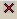
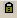
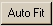

| Panel Spreadsheet Item | Description | POLYNOMIAL option |
| Polynomial coefficients | |
| Shows term associated with coefficient in POLYNOMIAL
command | U, V, W, T |
| Shows value of the coefficient | |
|  | Marks the coefficient for removal
| |
|  | Marks the value as fixed (used in auto fitting). | |
| Removes all terms marked "X". | |
| Shows all terms for the defined parameters. | |
|  | Fits any unlocked terms (up to 10) | |
| Updates graph window (not required for Auto Fit). | |